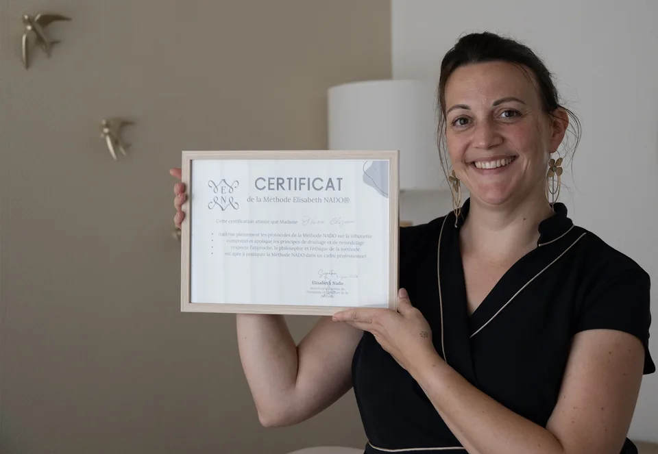

Une méthode précise, un suivi réel
La Méthode Nado® repose sur des gestes manuels doux et extrêmement précis, pensés pour relancer la circulation lymphatique en profondeur — sans effort, sans douleur, avec des résultats visibles dès les premières séances.
Jambes lourdes, gonflements, sensation de rétention : autant de signaux qui appellent un protocole adapté à votre corps — pas une solution générique.
-
Un bilan completChaque accompagnement commence par la séance l'Initiale : bilan personnalisé, prise de mensurations et premier drainage complet — la base de référence de votre suivi.
-
Un protocole adaptéUn drainage manuel précis, ajusté séance après séance selon votre évolution et vos objectifs.
-
Un suivi mesuréMensurations et ressenti réévalués aux séances 5 et 10, pour objectiver les résultats — pas seulement les ressentir.

Vos résultats, objectivés
Chaque accompagnement s'appuie sur une fiche de suivi personnalisée, réévaluée aux séances 5 et 10 — pour mesurer une évolution réelle, pas seulement ressentie.
Mensurations suivies
Sous-poitrine, taille, hanches, cuisses, genoux, mollets, chevilles — dans les mêmes conditions à chaque contrôle.
Ressenti évalué
Bien-être général, légèreté des jambes, satisfaction silhouette, énergie quotidienne, qualité du sommeil.
Des accompagnements pensés pour vous
De la première séance de découverte aux accompagnements sur mesure — chaque protocole est construit autour de votre corps et de vos objectifs.
Floriane est à la fois très professionnelle, douce, bienveillante et d'une immense gentillesse. On sent sincèrement qu'elle a à cœur d'aider les femmes à se sentir mieux.Barbara · avis Google
Des soins fabuleux tant par la qualité que l'efficacité et prodigués par une personne exceptionnelle.Joëlle · avis Google
Un pur moment de bien-être ! J'ai adoré mon soin de drainage.M. · avis Google
Ce drainage m'a fait beaucoup de bien. Je me sens plus légère.Guy · avis Google

Floriane Cluzeau
Certifiée Méthode Nado® directement par Élisabeth Nado — créatrice de la méthode, 28 ans d'expertise au service des plus grands palaces parisiens — je suis à ce jour la première et seule praticienne certifiée du bassin toulousain.
Passionnée par le geste juste, le respect du corps de la femme, je vous accueille dans mon cabinet de Muret comme un vrai lieu de soin. Je me déplace également à votre domicile dans un rayon de 30 km autour de Muret (Toulouse Sud, Portet-sur-Garonne, Cugnaux, Seysses, Roques…)
- Certifiée Méthode Nado® par Élisabeth Nado, créatrice de la méthode
- Première praticienne certifiée en région toulousaine
- Cabinet au 23 Av. du Président Vincent Auriol, Muret (31600)
- Déplacements à domicile dans un rayon de 30 km autour de Muret
Faites votre bilan — le point de départ de votre suivi
6 questions pour identifier l'accompagnement adapté à vos besoins — drainage lymphatique, remodelage ou protocole mixte. C'est aussi la première mesure de votre protocole.